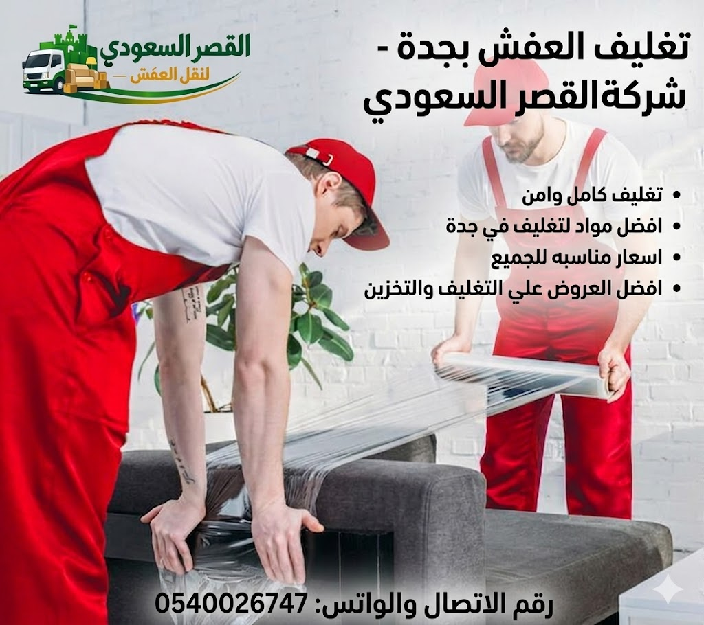
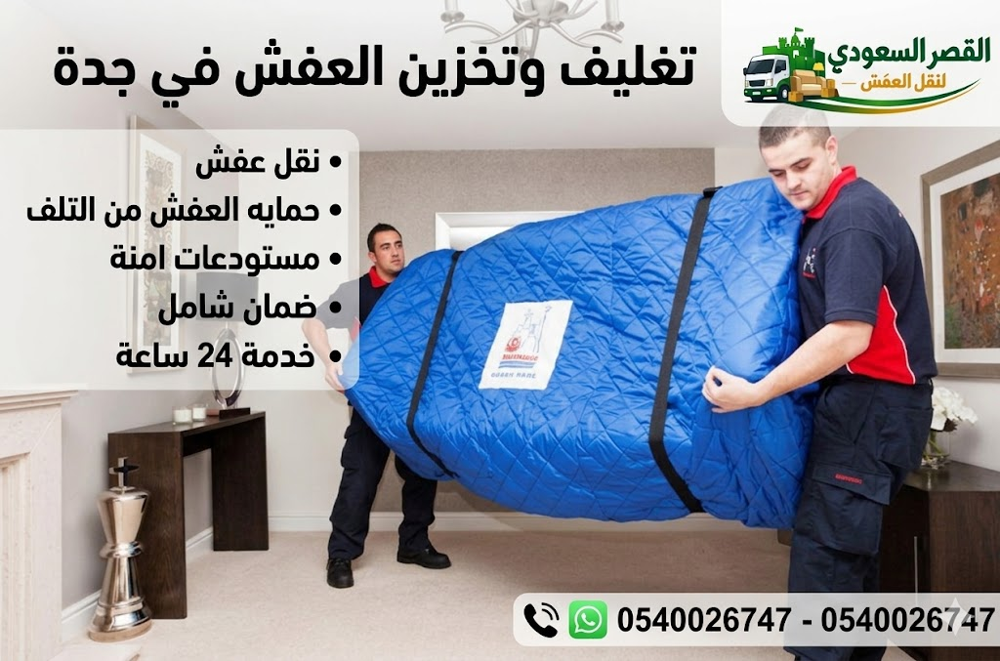

الكلمات المفتاحية:
المقدمة: لماذا يعتبر تغليف العفش أهم مرحلة في عملية النقل بجدة؟

تعتبر مرحلة تغليف العفش بجدة الحصن المنيع والمرتكز الأساسي الذي يضمن سلامة المنقولات المنزلية والمكتبية بنسبة 100%. في مدينة ساحلية ذات جو خاص مثل جدة، تتعرض المنقولات أثناء نقلها لعوامل جوية متعددة كارتفاع درجات الحرارة والشرق والأتربة، فضلاً عن الاهتزازات الطبيعية أثناء السير في الطرقات. ومن هنا تبرز أهمية اختيار شركة تغليف عفش بجدة معتمدة مثل شركة القصر السعودي لتوفير العزل الكامل والمائي والتصدي لكافة المخاطر المحتملة.
عند استئجار خدمة تغليف الأثاث بجدة، فإنك لا تحصل مجرد على أغطية كرتونية، بل على منظومة هندسية متكاملة تبدأ بفرز كل قطعة وتحديد خامات التغليف المناسبة لها؛ فالأخشاب الطبيعية تحتاج لتبطين قماشي ناعم، بينما الشاشات والزجاج يتطلبان فقاقيع بلاستيكية مزدوجة (Bubble Wrap) بسمك 100 ميكرون مع زوايا كرتونية مقواة. كما يترابط فريق التغليف مباشرة مع خدمات فك وتركيب العفش بجدة لفك القطع الكبيرة وتغليف كل جزء بشكل مستقل.
نحن ندرك في شركة القصر السعودي أن العفش يمثل قيمة مادية واستثمارية كبيرة لكل أسرة، ولذلك نعتمد على استيراد أحدث خامات مواد تغليف العفش، مثل الرغوة البوليمرية العازلة للصدمات، كراتين التغليف الخماسية الطبقات (5-Ply)، والأشرطة الممغنطة التي تحفظ المسامير والمفصلات. هذه التجهيزات المتطورة تجعل من عملية نقل العفش داخل جدة تجربة خالية تماماً من القلق، مع تقديم وثيقة ضمان مكتوب موثق ضد الكسر والخدش.
سواء كنت تخطط للانتقال بين أحياء شمال جدة عبر خدمات نقل عفش شمال جدة أو تشحن عفشك للمدن الأخرى بواسطة دينا نقل عفش جدة المقفلة، فإن فريقنا مستعد للوصول إليك فوراً وتوفير طرد التغليف الشامل بأرخص الأسعار والتكاليف الممكنة. كما نرحب بزيارتك لصفحة أسعار نقل وتغليف العفش بجدة للاطلاع على كافة الحزم والخصومات المتوفرة.
هل ترغب في طلب خدمة تغليف العفش فوراً بجدة؟
فريقنا الفني جاهز بالحاويات والمواد لمباشرة العمل فوراً!
لماذا يعد تغليف العفش خطوة أساسية ومحورية قبل النقل والتخزين؟
يتساءل الكثير من العملاء عن الجدوى الفنية لـ تغليف العفش بجدة قبل بدء التحميل والنقل. والإجابة العلمية تكمن في أن التغليف يعتبر الحامي الوحيد لمنع الاحتكاك المباشر بين القطع داخل الشاحنة أو أثناء رفعه بواسطة ونش رفع العفش بجدة الهيدروليكي. فبدون التغليف المحكم، تتسبب الحركة والاهتزازات المطاطية في خدش الدهانات الخشبية وتلف القشرة الخارجية للدواليب والأسرة.
تتجلى أهمية التغليف الاحترافي في توفير العزل التام للأجهزة الكهربائية الدقيقة؛ كالشاشات الذكية، المكيفات، والثلاجات التي تتأثر بالصدمات الكهربائية أو الرطوبة. في شركة القصر السعودي، نعتمد تقنية التغليف ثلاثي الطبقات عبر دمج البلاستيك الفقاعي والكرتون المضلع والنايلون الاستريتش المقوى لحماية الحواف والزوايا الزجاجية، وهو ما يقلل معدل المخاطر والتلفيات إلى صفر بالمائة.
علاوة على ذلك، يسهل التغليف المنظم عملية الترقيم والفهرسة أثناء الشحن الخارجي عبر النقل بين مدن المملكة، حيث يتم كتابة اسم الغرفة والمحتويات على كل صندوق مصفح، مما يجعل عملية التنزيل وإعادة التجميع سهلة ومباشرة في المنزل الجديد. كما يخدم التغليف المحكم أصحاب العقارات والفلل الذين يطلبون تخزين العفش بمستودعات جدة لحمايته من العفن والحشرات لفترات زمنية طويلة.
حماية 100% من الخدوش
عزل الزجاج ضد الكسر
مقاومة الرطوبة والأمطار
ترقيم وتتبّع سلس
احصل على تغليف محترف يحمي أثاثك اليوم!
خصم خاص على باقات التغليف الكاملة لجميع أحياء جدة.
خدمات تغليف العفش التخصصية التي نقدمها في جدة
تتعدد وتتنوع خدمات تغليف العفش بجدة لدى شركة القصر السعودي لتغطي كافة مكونات المنزل الحديث، بدءاً من أثاث الفلل الفاخرة وحتى أجهزة الشقق والمكاتب التجارية بجدة:
1. تغليف غرف النوم وأثاث إيكيا والتركية
تشمل خدماتنا تغليف كافة عناصر غرف النوم من الدواليب الكبيرة، الأسرة الهيدروليكية، والمكاتب، وذلك بعد تفكيكها بواسطة نجار متخصص من قسم فك وتركيب غرف النوم بجدة. يتم تغليف كل لوح خشبي برغوة البولي إيثيلين وقماش اللباد المعزول للحفاظ على الدهان والمفصلات.
2. تغليف المجالس العربية والكنب الفاخر
يتطلب تغليف المجالس والكنب العالي القيمة استخدام بلاستيك التمدد المطاطي (Stretch Film) لمنع تسرب الغبار والرطوبة لأنسجة القماش، مع إضافة طبقات كرتونية لحماية الأرجل الخشبية والمعدنية. هذه الخدمة تضمن بقاء المجالس بنظافتها الكلية أثناء عمليات نقل الفلل بجدة.
3. تغليف المطابخ والرخام والأجهزة الكهربائية
نقوم بفك المطابخ الخشبية والألوميتال، وتغليف كل خزانة ودرج بصندوق مخصص، مع حماية أسطح الرخام الطبيعي والصناعي ببطانيات قماشية سميكة. كما نخصص فريقاً لتغليف الثلاجات والمكيفات ضمن باقة نقل وتغليف الأجهزة الكهربائية بجدة.
استفسر عن الحزمة المناسبة لنوع عفشك فوراً!
نوفر خامات متخصصة لكل قطعة في منزلك.
أجود أنواع ومواد تغليف العفش بجدة لدى القصر السعودي
يعتمد تميزنا كـ أفضل شركة تغليف عفش بجدة على استخدام خامات ومواد حماية مستوردة ومعتمدة طبقاً للمواصفات القياسية:
- البلاستيك الفقاعي السميك (Bubble Wrap 100-Micron): أفضل مادة لامتصاص الصدمات وحماية الشاشات والزجاج والتحف.
- الكرتون المقوى المضلع (5-Ply Corrugated Cardboard): كراتين متينة تضمن حماية الأواني والأجهزة الصغيرة والأرشيف.
- نايلون الاستريتش المطاطي (Heavy Duty Stretch Film): يمنع نفاذ الرطوبة والغبار ويحفظ الكنب والمراتب.
- بطانيات العزل القماشية (Moving Felt Blankets): لحماية أسطح الأثاث الخشبي والمطابخ من الخدوش.
- واقيات الزوايا والرغوة (Foam Edge Protectors): لحماية أركان الدواليب والرخام والطاولات.
اطلب خامات التغليف المعتمدة لأثاثك الآن!
نوفر الكراتين ومواد التغليف والتوصيل الفوري بجدة.
خطوات تغليف العفش بطريقة احترافية ومنظمة في جدة

نطبق في شركة القصر السعودي خطة تنفيدية دقيقة تضمن السرعة والأمان التام أثناء عملية تغليف وحفظ الأثاث:
- المعاينة الفنية والتصنيف: تحديد عدد الشاشات، القطع الخشبية، والزجاجية لتجهيز كميات الكراتين والفقاقيع المناسبة.
- الفك الدقيق والتنظيف: تفكيك غرف النوم والمطابخ بواسطة النجارين وتنظيفها من الغبار قبل التغليف.
- التغليف ثلاثي الطبقات: تغليف كل لوح بالفقاقيع، والكرتون، ثم النايلون الاستريتش الحامي.
- الترقيم والتكويد: كتابة المحتويات ورقم الغرفة على كل صندوق لتسهيل عملية التنزيل والترتيب.
- التحميل الآمن بالدينا: رصف الصناديق والأثاث داخل شاحنات دينا نقل عفش جدة المبطنة كلياً.
احجز طاقم التغليف المحترف لمنزلك فوراً!
نوفر التغطية الفورية بكافة أحياء شمال ووسط وجنوب جدة.
نحن نختار المواد المناسبة لكل قطعة بناءً على حجمها ووزنها وحساسيتها. تغليف العفش بجدة معنا يعني استخدام المواد المثالية لكل قطعة، مع ضمان أعلى مستويات الحماية.
⚠️ تحذير مهم:
تجنب استخدام مواد التغليف الرخيصة غير المعتمدة. بعض الشركات تستخدم مواد رديئة قد تسبب خدوشاً على أسطح الأثاث، تراكم الرطوبة وتكون العفن، وانبعاث روائح كريهة.
خطوات تغليف العفش بطريقة احترافية في جدة
نتبع في شركة القصر السعودي منهجية علمية في تغليف العفش بجدة تضمن حماية شاملة لجميع أنواع الأثاث. إليك خطواتنا التفصيلية:
- معاينة الأثاث: نقوم بزيارة موقعك لتقييم كمية ونوع الأثاث، وتحديد الاحتياجات الخاصة لكل قطعة. هذه الخطوة تمكننا من وضع خطة تغليف مخصصة وتقدير الوقت والمواد المطلوبة.
- فرز القطع حسب نوعها: نقوم بتصنيف الأثاث إلى مجموعات حسب الحجم ونوع المادة (خشب، زجاج، أجهزة، منجد) لتحديد أفضل طريقة للتغليف لكل مجموعة.
- فك الأثاث الكبير: نقوم بتفكيك القطع الكبيرة مثل دواليب الملابس والأسرة والمكاتب إلى أجزاء أصغر لتسهيل التغليف والنقل. نحرص على ترقيم كل جزء ووضع البراغي والمفصلات في أكياس مخصصة. هذه الخدمة متوفرة بشكل مستقل عبر فك وتركيب الأثاث في جدة.
- تنظيف القطع قبل التغليف: نقوم بتنظيف الأثاث جيداً من الأتربة والغبار قبل التغليف. هذه الخطوة تمنع حبس الأوساخ تحت مواد التغليف وتحافظ على نظافة الأثاث.
- تغليف كل قطعة بالمادة المناسبة: نستخدم المواد المناسبة لكل قطعة: البلاستيك الفقاعي للزجاج، البطانيات القماشية للخشب، بلاستيك التمدد للمنجد، والكراتين المقواة للقطع الصغيرة.
- تثبيت التغليف جيداً: نستخدم شرائط لاصقة قوية وحبال تثبيت لتأمين التغليف ومنع تحركه أثناء النقل. نحرص على أن يكون التغليف محكماً دون أن يكون ضيقاً جداً.
- ترقيم الكراتين والأجزاء: نضع ملصقات واضحة على كل صندوق تحدد محتوياته والغرفة التي يجب وضعه فيها. نستخدم نظام ترميز بالألوان والأرقام لتسهيل عملية التفريغ والتركيب.
- تحميل العفش داخل السيارة بطريقة منظمة: نقوم بتحميل القطع المغلفة داخل سيارة النقل بترتيب محكم، مع وضع القطع الثقيلة في الأسفل والخفيفة في الأعلى، وتثبيتها بأحزمة لمنع التحرك.
هذه الخطوات الدقيقة تجعلنا أفضل شركة تغليف عفش بجدة، حيث نضمن وصول أثاثك بحالة ممتازة.
احجز خدمة التغليف الاحترافية الآنتغليف الأثاث الخشبي والأسطح المصقولة في جدة
يعتبر تغليف الأثاث الخشبي بجدة من أكثر الخدمات المطلوبة حساسية؛ نظراً لأن الأخشاب الطبيعية (كالزان والسويدي) والأخشاب المعالجة (كـ MDF) تتأثر سريعاً بالرطوبة والخدوش والضربات الجانبية. في شركة القصر السعودي، نتعامل مع القطع الخشبية عبر تطبيق تقنيات تبطين خاصة بالبطانيات القماشية المعزولة لضمان عدم ملامسة المكونات البلاستيكية الحارة لطلاء الخشب المصقول.
نقوم بتثبيت واقيات الزوايا الرغوية (Foam Edge Guards) على أركان الطاولات والخزائن، ثم إضافة طبقة من البلاستيك الفقاعي المقوى وحزمة من النايلون الاستريتش لمنع دخول الغبار. وتتكامل هذه العملية الفنية مع خدمات فك وتركيب الأثاث بجدة لفك القطع الكبيرة وتغليف كل جزء على حدة.
احصل على تغليف آمن لأثاثك الخشبي الآن!
نضمن سلامة الطلاء والأركان الخشبية 100%.
تغليف غرف النوم الكاملة وإيكيا في جدة
تشمل خدمة تغليف غرف النوم بجدة تغليف كافة محتويات الغرفة، بدءاً من دواليب 6 أبواب، الأسرة، التسريحة، وحتى المراتب والستائر. نبدأ بتفكيك الدواليب بواسطة فني متخصص من قسم فك وتركيب غرف النوم بجدة، وترقيم كل لوح، وتجميع المفصلات والبراغي في أكياس مخصصة.
أما المراتب والوسائد فتغلف بأغطية بلاستيكية واقية مقاومة للماء والرطوبة، مع إحكام القفل لمنع دخول الأتربة إليها. هذه الخدمة المتقنة نتيحها لجميع عملائنا الراغبين في الانتقال السكني عبر خدمات نقل الفلل والشقق بجدة.
تحتاج لتغليف غرف نومك مع الفك والتركيب؟
نصلك خلال 30 دقيقة في أي حي من أحياء جدة.
تغليف الزجاج والمرايا والقطع القابلة للكسر بجدة
يتطلب تغليف الزجاج والمرايا بجدة عناية استثنائية؛ حيث نقوم بوضع طبقتين من البلاستيك الفقاعي (Bubble Wrap) بسمك عالي، ثم وضع اللوح الزجاجي بين طبقتين من الكرتون المضلع وتثبيت واقيات رغوية على الزوايا. يتم بعد ذلك وضع ملصقات تحذيرية "زجاج - قابل للكسر" لتنبيه عمال التحميل أثناء الشحن بشاحنات دينا نقل عفش جدة.
احمِ طاولاتك والزجاج والمرايا من التلف فوراً!
نوفر صناديق مصفحة وواقيات خاصة للقطع الزجاجية.
تغليف الأجهزة الكهربائية والمكيفات والشاشات بجدة
نستخدم في شركة القصر السعودي مواد تغليف مضادة للكهرباء الساكنة عند تقديم خدمات تغليف الأجهزة الكهربائية بجدة لحماية الشاشات، الثلاجات، والمكيفات من الصدمات والاهتزازات. يتم وضع الشاشات الذكية داخل كراتين مبطنة بالفوم المخصص لحماية الشاشة الحساسة.
احجز خدمة تغليف ونقل الأجهزة الكهربائية والمكيفات!
فنيون متخصصون لحماية الشاشات والأجهزة بجدة.
تغليف الكنب والمجالس والمفروشات بجدة
تتطلب أطقم الكنب والمجالس الفاخرة تغليفاً محكماً بالبلاستيك المطاطي المعزول وقماش اللباد لحمايتها من تسرب الأتربة أو البقع أثناء التحميل والتنزيل. وتخدم هذه الخدمة العوائل الراغبة في الانتقال إلى الفلل عبر خدمات نقل الفلل بجدة.
حافظ على مجالس وكنب منزلك بنظافة كاملة!
تغليف مقوى يحمي الأنسجة والأقمشة من الأتربة.
تغليف العفش الشامل قبل بدء عملية النقل بجدة
يعتبر التغليف المسبق خطوة أساسية تسبق عملية التحميل بالنقل المباشر عبر شركة نقل عفش بجدة. فالتغليف المتقن يسهل رصف وحزم المنقولات داخل الشاحنة ويقلل الوقت الإجمالي للرحلة.
اطلب حزمة النقل والتغليف الشاملة بخصم 25%!
نصلك فوراً في أي حي من أحياء جدة.
تغليف العفش المخصص للرحلات والخطوط الطويلة بين المدن
يتطلب الشحن لمسافات طويلة (مثل النقل من جدة إلى الرياض، مكة، المدينة، والشرقية) حماية مضاعفة ثلاثية الطبقات لحماية المنقولات من اهتزازات السفر على الطرق السريعة. يمكنك الاطلاع على مسارات خدماتنا بصفحة النقل بين مدن المملكة.
تخطط لشحن أثاثك إلى مدينة أخرى؟
نوفر التغليف المصفح والدينا المقفلة لرحلات السفر.
تغليف العفش للتخزين طويل المدى بمستودعات جدة
عند حفظ المنقولات لفترات طويلة، نستخدم مواد عازلة للرطوبة والعفن ونضيف أكياس السليكا جيل الممتصة للرطوبة لحماية الخشب والمفارش. وتتكامل هذه الخدمة مع مستودعاتنا المعتمدة بصفحة تخزين العفش بجدة.
استفسر عن حزم تغليف وتخزين العفش بجدة!
مستودعات مكيفة ومؤمنة 24/7 بجدة.
أبرز الأخطاء الشائعة أثناء تغليف العفش بجدة وكيفية تجنبها
يتعرض العفش للتلف أو الخدش عند التغليف العشوائي الفردي؛ كاستخدام الشريط اللاصق مباشرة على الدهان الخشبي، أو إهمال حماية زوايا الرخام، أو تعبئة الكراتين بأوزان فائقة تتجاوز 30 كجم. نوصيك بطلب خدمات المعاينة والخدمة الاحترافية من شركة تغليف عفش بجدة لتفادي هذه الأخطاء المعقدة وتوفير الوقت والجهد.
تجنب الأخطاء واحصل على تغليف مضاعف ومضمون!
خبراء التغليف في جدة بين يديك على مدار 24 ساعة.
هل كل قطعة أثاث تحتاج إلى طريقة تغليف مخصصة؟
تختلف تقنيات التغليف طبقاً لطبيعة المادة وحجم القطعة؛ فالزجاج يتطلب الكرتون المضلع والفقاقيع، والكنب يستلزم الاستريتش النايلون والقماش، بينما غرف النوم تتطلب التفكيك الشامل وتغليف كل لوح على حدة. نرحب بزيارة دليلنا لـ فك وتركيب العفش بجدة للاطلاع على المزيد.
استفسر عن طرق التغليف المخصصة لقطع منزلك!
فريقنا الفني يقدم الحل التخصصي لكل خامة ومادة.
متى تحتاج للحصول على خدمة تغليف العفش بجدة؟
تحتاج خدمة تغليف العفش في حالات الانتقال السكني بين الأحياء، الشحن بين المدن بواسطة دينا نقل عفش جدة، أو عند تخزين الأثاث بمستودعات الأمان عبر تخزين العفش بجدة، وكذلك عند تجديد دهانات المنازل وحفظ المنقولات من الغبار.
مهما كانت حالة الانتقال، نحن بجانبك لتغليف عفشك!
خدمة فورية وشاملة بكافة مناطق عروس البحر الأحمر.
جدول حزم وأسعار تغليف العفش بجدة 2026
نقدم في شركة القصر السعودي أفضل خطط الأسعار لخدمات تغليف الأثاث بجدة لتناسب جميع الفئات، مع ضمان شفافية الحساب بدون أي رسوم خفية. تفضل بقراءة تفاصيل أسعار نقل العفش بجدة:
| حزمة الخدمة | السعر التقديري (ريال سعودي) | الوقت المتوقع | التجهيزات المشمولة |
|---|---|---|---|
| تغليف غرفة نوم كاملة | 300 - 500 ريال | 2 ساعة | فقاقيع، كرتون، استريتش، كيس مراتب |
| تغليف طقم كنب ومجلس | 200 - 350 ريال | 1.5 ساعة | استريتش، لباد قماشي، واقيات أرجل |
| تغليف شقة كاملة (3 غرف) | 700 - 1100 ريال | 4 ساعات | كراتين 5-Ply، فقاقيع، فوم زوايا |
| تغليف فيلا دورين كاملة | 1400 - 2200 ريال | يوم كامل | تغليف سوبر VIP + صناديق خشبية للتحف |
احصل على خصم 25% عند طلب التغليف والنقل معاً!
عروض متجددة وأرخص التكاليف لدى شركة القصر السعودي.
هل تتوفر خدمة التغليف بشكل مستقل أم ضمن الحزمة الشاملة؟
نوفر في شركة القصر السعودي مرونة كاملة لعملائنا الكرام؛ حيث يمكنك طلب خدمة شراء وتوصيل كراتين وتغليف العفش بجدة بشكل فردي، أو الاستعانة بفريق التغليف فقط، أو التعاقد على الخدمة المتكاملة التي تشمل الفك، التغليف، التحميل بالدينا، ورفع الأثاث بـ ونش العفش بجدة.
اختر الخيار الأنسب لاحتياجاتك وميزانيتك!
نوفر كراتين التغليف وحاويات التعبئة الفورية.
كيف تختار أفضل شركة تغليف عفش بجدة؟
عند اختيار شركة التغليف، احرص على التأكد من توفيرها لخامات معتمدة (كالفقاقيع والكرتون الخماسي)، وامتلاكها طاقم نجارين مدرب لفك الأثاث، مع تقديم ضمان موثوق ضد الخدوش والكسر وتوفير السيارات المغلقة كـ دينا نقل عفش جدة.
اختر الشركة الأولى والرواد في تغليف العفش بجدة!
شركة القصر السعودي - الخبرة والضمان الكامل.
نصائح وإرشادات قبل البدء بتغليف العفش في جدة
نوصيك بتنظيف المنقولات وتجفيف الخشب تماماً قبل التغليف، وتجميع المستندات والمجوهرات في حقائب خاصة، والتأكد من تفريغ الأجهزة والمشروبات قبل رصف الأطباق داخل كراتين مخصصة. للمزيد تفضل بقراءة مقالنا حول نصائح قبل نقل العفش في جدة.
استشر الفني المختص مجاناً للحصول على أفضل التوجيهات!
خبراء التغليف والنقل بجدة يقدمون النصيحة الفورية.
مناطق وتغطية خدمات تغليف العفش بكافة أحياء جدة
نغطي كافة أحياء عروس البحر الأحمر بما فيها حي الشاطئ، حي الصفا، حي الحمدانية، حي المروة، حي الروضة، وحي الزهراء. نصل إليك بسياراتنا وموادنا فور اتصالك.
طلب تغليف العفش متوفر فوراً في حيك بجدة!
سيارات ومندوبون منتشرون في كافة أحياء جدة.
🎁 عرض خاص لفترة محدودة:
خصم 15% على تغليف العفش عند حجز خدمة النقل معاً. اتصل الآن للحصول على عرض سعر مجاني ومعرفة التفاصيل.